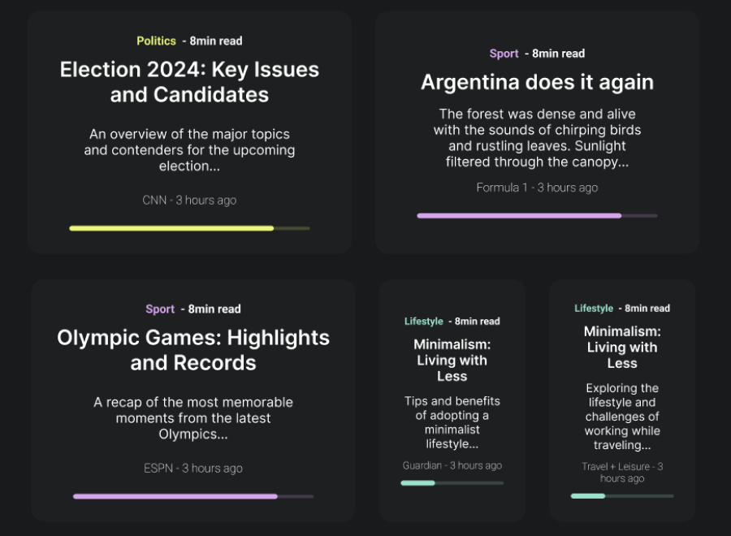
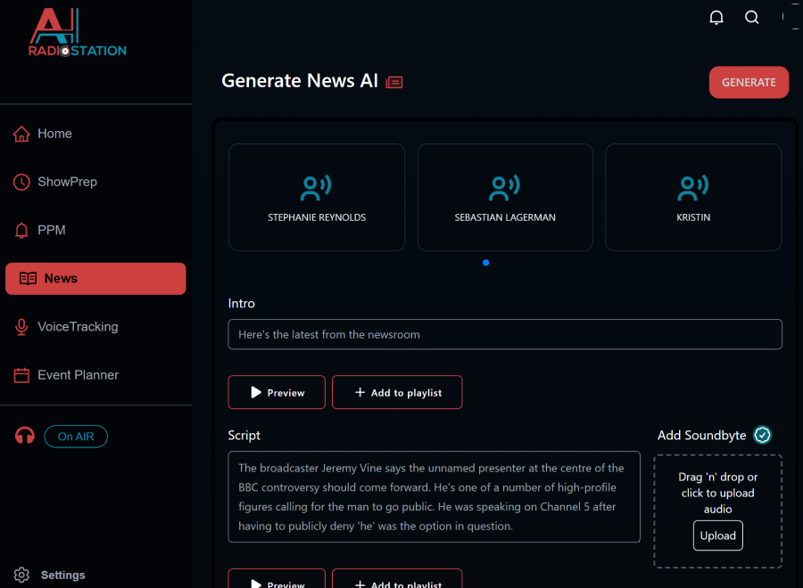

Full-stack developer moving fast
I work with startups to build products that look good, feel smooth, and actually get users to stick around.
The work

Trending Content
2024News aggregator pulling live Google News headlines, categorised and tunable by region and article volume. Stripe for payments, Firebase Auth for accounts.
Next.jsStripeFirebaseVisit site ↗
Radio Stations AI
2024Generates scripts with GPT, converts them to speech, and compiles the audio into playlists stored securely in Firebase.
Next.jsGPTTailwindVisit site ↗Built with
About
I build the thing you keep almost shipping.
Startups come to me with a clear idea and nobody free to build it. I take it from a rough brief to something live.
Something live in three weeks beats something perfect in three months. The useful feedback only starts once people can touch it.
If a feature is a bad idea I'll say so before I build it, not after you've paid for it.
Pages that load before you notice. Forms that don't lose your work. If it works but feels bad, it isn't finished.
Chess, gaming, long runs, and cooking things I have not earned the right to attempt.
Three ways to reach me
Tell me what you're building and roughly when you need it. If I'm not the right fit I'll say so quickly.